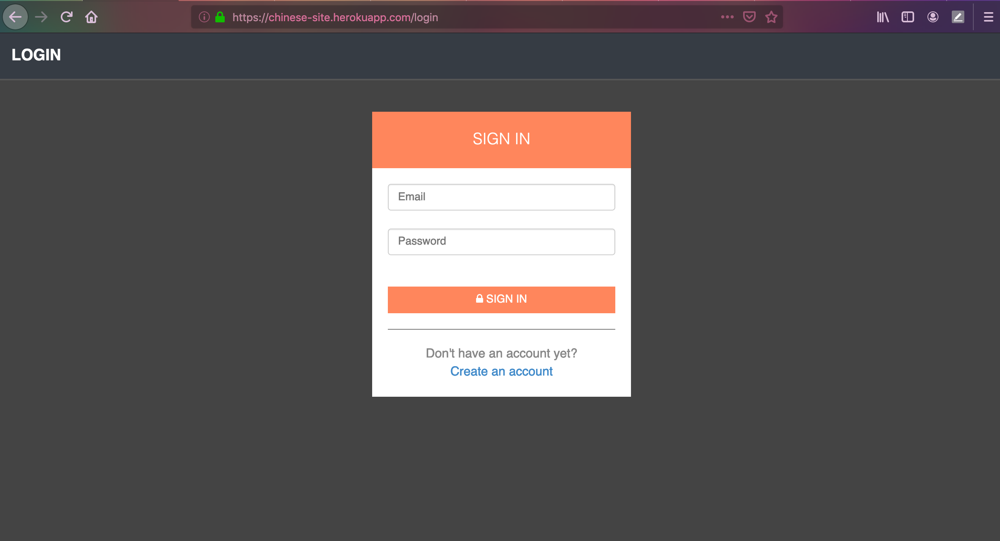
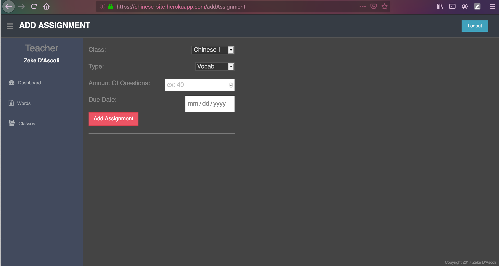

Project.
Ezekiel D'Ascoli
dascoli.e@northeastern.edu
609.213.6337
Language Learning Application
At the end of my junior year in high school, I was hired by my Chinese teacher to develop a language learning web application. This was my first introduction to full-stack web development. Throughout this process, I taught myself how to manage the routes of a webpage, build a server with Express and NodeJS, create user registration and authentication, store/update user info inside databases (first with MySQL and later with PostgreSQL), utilize version control through git, and eventually deploy the app via Heroku.
If you would like to peruse the student side of things, you can visit the site and register your own account here. Give the service a second to start up, then use TLin as your class id when you register.
If you would like a demonstration of the teacher side, please contact me so I can set up a sandbox environment for you.